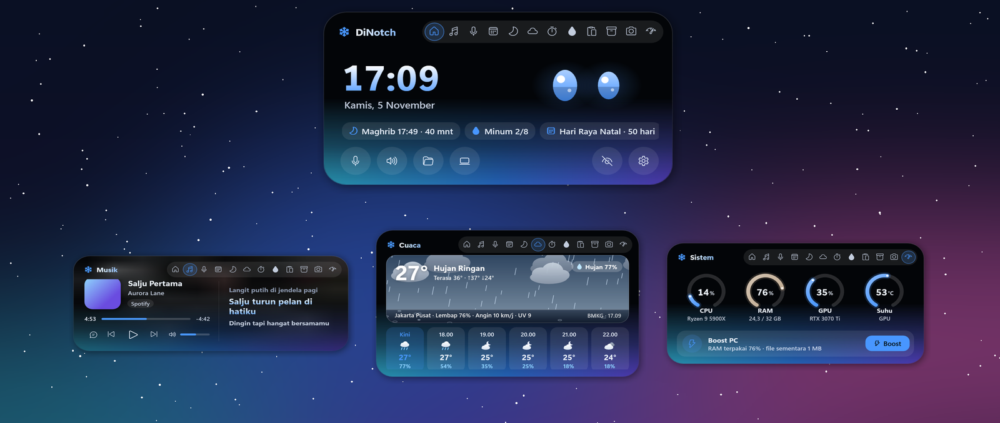
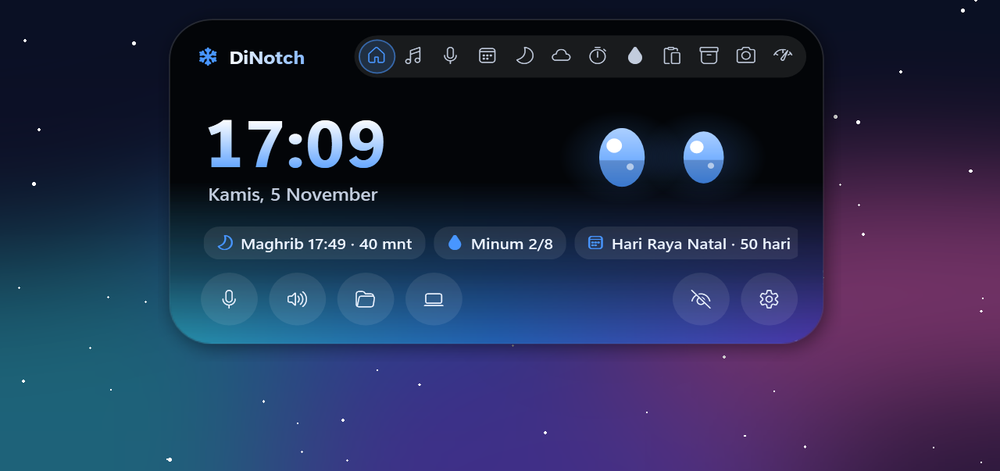
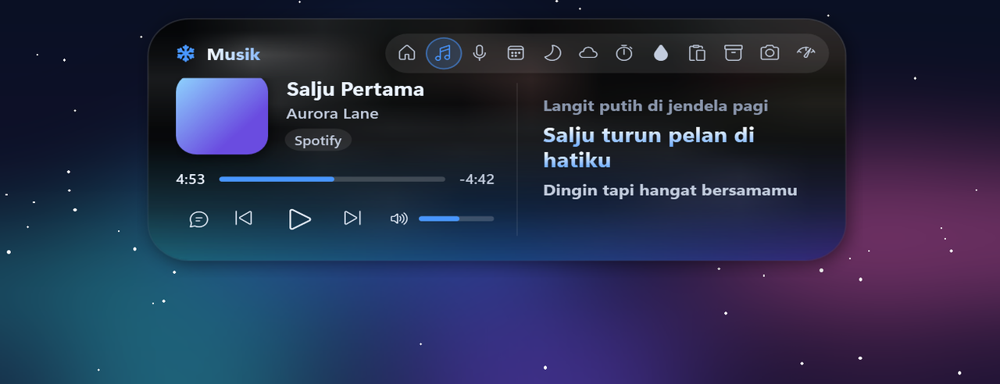
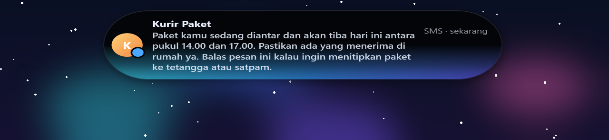
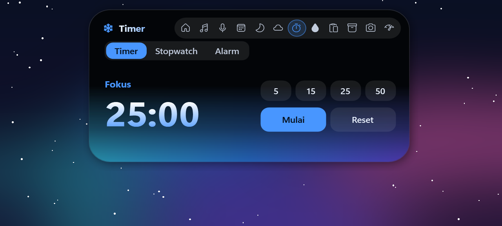
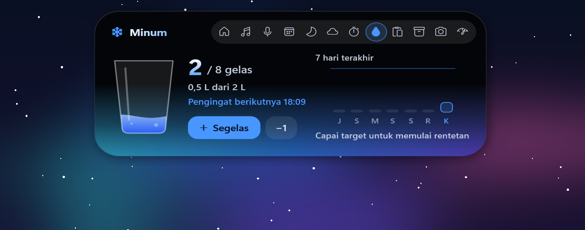
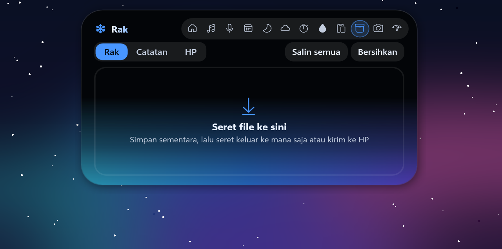
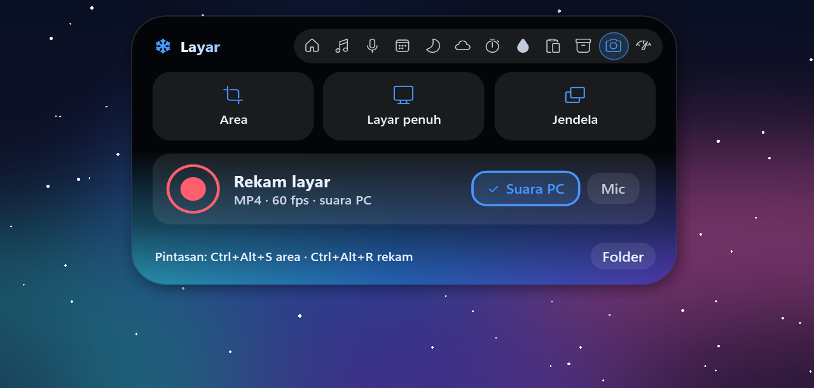

Dynamic island
untuk Windows ❄
Island kecil di atas layar yang membuka saat kursor diarahkan. Musik & lirik, cuaca, sholat, notifikasi HP, kirim file ke HP, monitor PC, tangkap & rekam layar, dan maskot mata yang menemani.
⬇ Unduh untuk Windows
Semua yang kamu perlu, di satu island
Ringan: memori ±60 MB, hampir 0% CPU saat diam.
Musik & lirik
Spotify, YouTube Music, browser. Cover, kontrol, lirik sinkron, visualizer dari audio asli.
Cuaca hidup
Hujan, petir, kabut, salju, matahari & bulan beranimasi. Peluang hujan, prakiraan 6 jam, data resmi BMKG.
Jadwal sholat
Metode Kemenag seluruh Indonesia, langit yang mengikuti matahari, adzan & pengingat. Bisa dimatikan.
Notifikasi HP
WhatsApp, SMS / OTP dengan tombol Salin, Instagram, baterai lemah, lewat Phone Link. Pesan panjang tampil utuh.
Sambung HP
Pindai QR, langsung terbuka di browser HP. Kirim foto & file dua arah tanpa batas ukuran, remote musik.
Sistem & Boost
CPU, RAM, GPU, suhu secara langsung. Boost melepas memori & membersihkan file sementara.
Tangkap & rekam
Area, layar penuh, jendela. Rekam MP4 dengan suara. Ctrl+Alt+S · Ctrl+Alt+R.
Waktu
Kalender hari besar Indonesia, timer / Pomodoro, stopwatch, alarm 5 suara.
Maskot
Robot, kucing, kelinci, beruang. Melirik, mengikuti kursor dengan gerak alami, menari mengikuti musik.
Gaya kamu
Mode Island, Notch, Robot. Belasan skin bergradien, warna kustom, animasi pegas halus.
Minum air
Pengingat dengan gelas beranimasi dan grafik 7 hari.
Rak & catatan
Simpan file sementara di island, seret keluar ke mana saja. Catatan & riwayat clipboard.
Galeri
Tampilan asli DiNotch.










Pasang dalam semenit
Tanpa akun, tanpa iklan.
- Unduh DiNotch.exe dari halaman Releases.
- Pasang .NET 8 Desktop Runtime (x64) bila belum ada.
- Jalankan. Tur singkat menjelaskan isinya; pengaturan ada di ikon salju di tray.
- Opsional: sambungkan HP di Phone Link untuk notifikasi, dan pindai QR di island › Rak › HP untuk kirim file.